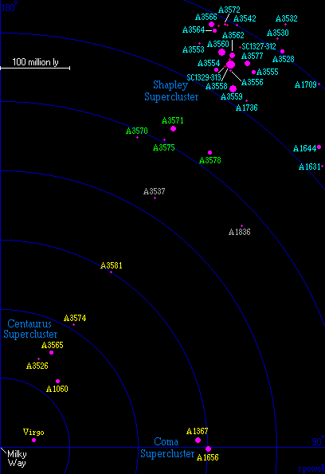

The Shapley Supercluster is a famous supercluster. This map shows every galaxy brighter than magnitude 16.5 (from the HyperLeda database) in this area of the sky. The four main clusters of the Centaurus supercluster (with yellow labels) lie directly in front of the Shapley supercluster. Behind the Centaurus supercluster at a distance of 500 million light years is another small supercluster (with green labels). At a distance of 650 million light years is a massive concentration of major galaxy clusters (marked with blue labels) - this is the Shapley supercluster first noticed by Harlow Shapley in 1930.
This is a list of the major clusters of galaxies in the Shapley Supercluster. There are 25 clusters of galaxies in this list (which does not include the four clusters in the Centaurus supercluster). Seven of these clusters have a richness class of 2 or higher, which means (roughly) that there are seven clusters here which are as rich as the Perseus or Coma clusters.
1 2 3 4 5 6 7
Abell Equatorial Redshift Distance Rich Notes
Number Coordinates z Mly
RA Dec
A1631 12 52.8 -15 26 .0450 615 0
A1644 12 57.2 -17 21 .0461 630 1
A3528 12 54.3 -29 01 .0516 700 1
A3530 12 55.6 -30 21 .0525 715 0
A3532 12 57.3 -30 22 .0542 735 0
A3537 13 01.0 -32 26 .0308 425 0 foreground cluster
A3542 13 08.7 -34 34 .0513 700 0
A1709 13 18.7 -21 28 .0509 695 0
A3553 13 19.2 -37 11 .0475 650 0
A3554 13 19.5 -33 29 .0458 625 1
A3555 13 20.8 -28 59 .0476 650 1
A3556 13 24.1 -31 40 .0467 635 0
A1736 13 26.9 -27 07 .0446 610 0
A3558 13 27.9 -31 30 .0468 640 4 'Shapley 8'
A3559 13 29.9 -29 31 .0449 615 3
A3560 13 31.8 -33 13 .0477 650 3
A3562 13 33.5 -31 40 .0478 650 2
A3564 13 34.4 -35 13 .0493 670 1
A3566 13 39.0 -35 33 .0498 680 2
A3570 13 46.8 -37 55 .0354 485 0
A3571 13 47.5 -32 52 .0379 520 2
A3572 13 48.2 -33 23 .0505 690 0
A3575 13 52.6 -32 53 .0365 500 0
A3577 13 54.3 -27 51 .0482 655 2
A3578 13 57.5 -24 44 .0381 520 1
|
Below is a list of five other major groups of galaxies in the Shapley Supercluster. The SC1327-312 and SC1329-313 groups are particularly famous because they lie near the centre of the supercluster between the A3558 and A3562 clusters.
1 2 3 4 5 6 7
Group Equatorial Redshift Distance Rich Notes
Name Coordinates z Mly
RA Dec
S718 12 59.7 -33 40 .0478 650
S729 13 21.5 -35 48 .0499 680
S731 13 23.0 -34 53 .0505 690
SC1327-312 13 29.8 -31 36 .0495 675
SC1329-313 13 31.6 -31 49 .0469 640
|
Column 1: The name/number of the cluster or group.
Column 2: The Right Ascension for epoch 2000.
Column 3: The Declination for epoch 2000.
Column 4: The redshift of the cluster.
Column 5: The distance in millions of light years assuming H=70km/s/Mpc.
Column 6: The 'richness' class of the cluster (for Abell clusters only).
Column 7: Additional names and notes.
References:
Abell G, Corwin H, Olowin R, (1989), A catalogue of Rich Clusters of Galaxies,
Astrophys J Supp, 70, 1.
Struble M, Rood H, (1999), A compilation of redshifts and velocity dispersions for
ACO clusters, Astrophys J, 125, 35.

This map (which looks down onto the supergalactic plane) shows all of the major clusters of galaxies between us and the Shapley supercluster. Our Galaxy is located at the lower-left, and between us and the Shapley supercluster lies the Centaurus supercluster. At a distance of 650 million light years, the Shapley supercluster is a dense collection of approximately 20 major clusters of galaxies contained within a region that is not much larger than the Virgo supercluster (which only contains one major cluster).
In the middle of the Shapley supercluster are several massive clusters. The Abell catalogue contains only five clusters of galaxies with a richness class above 2 within one billion light years from us. Three of these clusters (A3558, A3559 and A3560) are in the Shapley supercluster. The fourth cluster (A3128) is in the Horologium supercluster, and the fifth cluster (A3301) is on the edge of the Horologium supercluster. These clusters are some of the richest clusters of galaxies known and some of them contain more galaxies than the very rich Coma cluster.
This is a picture of the centre of the A3558 cluster. The various blue objects in this image are the galaxies (except for the very obvious blue star at the lower-left) and the yellow objects are foreground stars. This cluster is sometimes called Shapley 8 because it was the eighth cluster in a list of rich clusters which Harlow Shapley published in 1933. At the centre of the cluster is an enormous elliptical galaxy (ESO444-46) with a diameter larger than 340 thousand light years.
Below is a map of the A3558 cluster. This map shows 135 of the brightest galaxies in this cluster. The galaxies here are spread across a distance of about 10 million light years which is roughly the diameter of our Local Group. It is likely that there are some other smaller groups of galaxies in the foreground and background of this cluster which make the cluster look slightly richer than it actually is.
In the Harvard Observatory Bulletin in 1930, Harlow Shapley published a Note on a Remote Cloud of Galaxies in Centaurus. He described "a cloud of galaxies in Centaurus that appears to be one of the most populous yet discovered". He did not actually discover the entire supercluster. His map showing the cloud corresponds to the row of clusters in the centre of the supercluster including A3556, A3558 and A3562. In 1933, Harlow Shapley included A3558 in a list of 25 rich clusters of galaxies.
It required a long time for astronomers to rediscover the Shapley supercluster. In the late 1970's astronomers began to notice strong X-ray sources in this part of the sky. J Melnick and H Quintana rediscovered the A3558 cluster in 1981 which they called 2A1326-311 (from a catalogue of X-ray sources) and they mentioned that it was in "an area of the sky extremely rich in galaxies", thus repeating Harlow Shapley's observation from 51 years earlier. In 1987, Jorge Melnick and Mariano Moles published the first major evidence that there is a massive supercluster here.
The publication of the southern extension of the Abell catalogue by G Abell, H Corwin and R Olowin in 1989 was very important because it gave astronomers a full list of the rich clusters in this region. R Scaramella, G Baiesi-Pillastrini, G Chincarini, G Vettolani and G Zamorani announced in a paper in 1989 and in another paper in 1990 that they had also discovered this supercluster (which they called the alpha region) while searching for the Great Attractor (see the page on the Centaurus supercluster). S Raychaudhury also noticed the supercluster in a paper in 1989, but he concluded that it was too far to be the Great Attractor. S Raychaudhury was one of the first people to use the name Shapley supercluster.
The Shapley supercluster is one of the most studied superclusters. In the five years from 1997 to 2001, approximately 40 scientific papers were published about the entire Shapley supercluster. No other supercluster currently receives so much attention. It is a unique supercluster in our part of the universe. Several of the clusters in the Shapley supercluster are also strong sources of X-rays. A recent X-ray map published by S Ettori, A Fabian, D White, (in a paper in 1997) can be seen here.
Harlow Shapley was born on November 2, 1885, in Missouri, USA. After attending the University of Missouri and Princeton University, he joined the staff of the Mount Wilson Observatory in California. He was the first person to realise the true size of our Galaxy in 1918 while studying globular clusters, and he was the first person to locate the centre of our Galaxy. In 1920 he became Director of the Harvard College Observatory, and after 1925 he began studying the distribution of galaxies in the sky. He was one of the first astronomers to believe in the existence of superclusters (which he called clouds of galaxies), although he was not aware that there were empty voids in the universe also. Harlow also discovered (in 1938) the Sculptor and Fornax dwarf galaxies. He died at the age of 86 on October 20, 1972.
Below - a map of part of the Shapley supercluster. This map shows the density of galaxies in the central region of the supercluster. Red, yellow and green regions are areas with the largest number of galaxies. This image was provided by Sandro Bardelli - one of the principal researchers studying the Shapley supercluster.